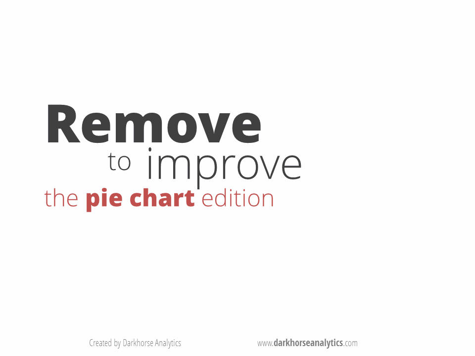
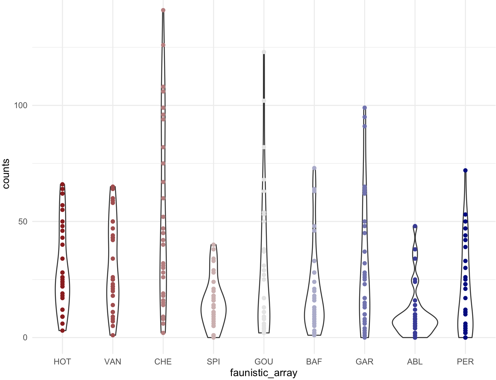

Session 9 – Graphics and Colors
Plots, graphs and other visual representations of data and central to bioinformatics. Such illustrations summarize year/months of data collection and complex statistical analyzes. The main goal of such visual representations is to improve the observer, reader or researcher his/her understanding of the data and his/her abilities to compare with other datasets and reveal trends in the data collected, compiled or analyzed. However, you might have seen good, bad and ugly graphs. Yet, an effective graph is easier to decode or understand than others, by virtue of this, it is likely to be beautiful.
9.1 Avoid bad graphics
I think it is a good idea to review about effective graphics. Here is a list of suggestions, mostly summarized, from the graphics section by Jenny Bryan STAT 545 class at UBC.
A) No 3D or overdone plots: Our current format to visualize data is paper or screen (a 2D surfaces) by adding another dimension makes information difficult to visualize. Likewise, eliminating clutter and de-emphasizing supporting elements make reduce the attention exhaustion of the reader (i.e., every aspect of a figure should add if needed). Suggestions: Try to keep graphics simple and make most of them as 2D, no shadows or excess ornamentation.
Here is a visual animation that transforms an overdone bar chart into one that is just right with the information that it wants to communicate.
 Source https://www.darkhorseanalytics.com.
Source https://www.darkhorseanalytics.com.
B) No Pie Charts: This type of infographic is probably the least effective when encoding quantitative data (e.g., percentages or fractions) because pie charts use angles and areas, which are very hard for visualize or compare. Suggestions: Use bar charts and dotplot for proportions and percentages. These graphs make comparisons easier by positioning objects along a common scale.  Source https://www.darkhorseanalytics.com.
C) Careful about scale of things: Some data need to be scaled or transformed (e.g., logarithms) before plotting to allow the reader to visualize the data distribution. For example, some variables show a multiplicative or exponential scales that jumps from tens to hundreds or thousands. ** Suggestions:** Explore you data first and determine if it needs transformation.
## load mammal dataset from 'MASS' and transform them with modify() from 'purrr'
library(MASS)
library(purrr)
mammals_raw <- mammals
mammals_log <- modify(mammals_raw,log10)
## plot them side to side into a 1*2 array
par(mfrow=c(1,2))
plot(x = mammals_raw$body, y = mammals_raw$brain)
mtext(side=3, line=0.5, adj=0, "raw data from mammal -- body vs brain")
abline(lm(brain ~ body, data = mammals_raw), col = "blue")
plot(x = mammals_log$body, y = mammals_log$brain)
mtext(side=3, line=0.5, adj=0, "Log10 data from mammal -- body vs brain")
abline(lm(brain ~ body, data = mammals_log), col = "blue")
D) Avoid Microsoft Excel default plots: Most people use Excel at some point to store their data, then comes the temptation to use their reduced offer of plots and charts. In general, these tend to be plain and less customizable than those derived from R graphics. ** Suggestions:** You already are taking this workshop.
E) Careful with the figure legend: Most graphics need a legend when they are in paper, reports or other divulgation source as these images should stand alone from the main text of the article. Then, the accompanying legend should not contradict what the graphic is showing (i.e., self-contradiction). This is a common mistake and can be used against your paper and thesis by reviewers that will consider that your work is careless and sloppy. ** Suggestions:** Always proofread your manuscripts.
F) Make simple tables: Tables also should be easy to read with simple formats (use minimal or no grid lines). The information should be visible and no more three decimal places. Remember that p-values cannot be zero (i.e., probability never is equal to 0), instead use p < 0.001 if a value is really small or use scientific notation if such tiny p-value is of relevance.

Source https://www.darkhorseanalytics.com
G) Other Plots to avoid: Radar charts that make comparisons of data points very difficult as they are placed in a circle, the middle portion stacks too many contrasts and there is a disproportionate emphasis of high numbers (i.e., middle or low values are less visible). Use stack bars or bar charts.
9.2 Graphics in R – ggplot2
The preloaded graphics package of R helps the easy access plots, bar charts, boxplots and other. However, with the development of the ggplot2 package that is part of the tidyverse collection. This package and its growing collection of add-ons, which include at least 81, has made ggplot2 a dominant, flexible, and beautiful R graphics package. Therefore, we will explore graphics in R using this package. Like most visualizations, it would be ideal to start with installing ggplot2 and datasets that will serve as examples.
1) If you have not installed ggplot2, you should follow these instructions before we explore graphics and plots.
install.packages("ggplot2")
library(ggplot2)9.3 Preparing your dataset
2) We also need some reference datasets to use and plot for our graphics. We will use cars and the airway_scaledcounts.csv datasets.
## we will load 'ade4' package to get the bacteria dataset
library(ade4)
data(bacteria, package = "ade4")
## we get the espaa dataframe with number of the 21 amino acids present in 43 species of bacteria
bacteria_espaa <- bacteria$espaaWe then scale this dataset using the function modify() from the package purrr.
# load purrr package and scale the values
require(purrr)
bacteria_espaa_scaled <- purrr::modify(bacteria_espaa, scale)
head(bacteria_espaa_scaled)
# Ala Arg Asn Asp Cys Gln Glu Gly His Ile Leu
#AERPECG 0.3285668 0.7317790 -0.57189998 -0.1194444 0.1648422 -0.3942439 0.2871196 0.4766228 0.1461376 -0.04383607 0.39172834
#AQUAECG -0.4008694 -0.2034641 -0.22356528 -0.3025407 -0.3950725 -0.5262848 0.4634441 -0.1820602 -0.3947798 0.06415029 -0.09928685
#ARCFUCG 0.1073331 0.2833748 0.04401802 0.2066524 0.5498823 -0.4297732 0.8885965 0.2463444 -0.1330163 0.57892747 0.12987680
#BACHDCG 0.9012986 0.9875656 1.72105862 1.5171379 0.8224654 1.6598743 2.2634710 1.2984007 1.9400648 2.16751418 1.40433248
#BACSUCG 1.0314722 0.7271505 2.09337260 1.6457327 1.0718724 1.5394241 2.0612524 1.3252195 1.8173099 2.49733951 1.38291228
#BORBUCG -0.7597170 -0.7465478 0.01654507 -0.6016028 -0.9081081 -0.7293261 -0.6491864 -0.7234675 -0.8524967 -0.18035597 -0.60867882
# Lys Met Phe Pro Ser Stp Thr Trp Tyr Val
#AERPECG -0.36413421 0.09017282 -0.3275198 0.89114307 0.7319805 0.7113529 0.152094962 0.38406553 0.4369524 0.61086466
#AQUAECG 0.88477099 -0.28951403 0.1851469 -0.17796712 -0.4145196 -0.2123879 -0.323609531 -0.26598780 0.3076040 0.01812197
#ARCFUCG 0.79679827 0.48462587 0.5156315 0.08558657 0.1583118 0.2768920 0.008319353 0.09800132 0.6381195 0.61451548
#BACHDCG 2.08829038 2.07351272 2.0439218 1.06116153 1.5330792 1.4796369 1.887894271 1.20439921 2.0999898 1.67959246
#BACSUCG 2.95243158 2.18339064 2.1725251 1.03849240 1.9769142 1.5369105 1.887693467 1.04854940 2.2918176 1.46336710
#BORBUCG -0.02590849 -0.72066544 -0.3193467 -0.80668435 -0.5156512 -0.7990328 -0.785609156 -0.79075009 -0.4463524 -0.78199455We can also create a more easy to map plot with using the function melt() of the package reshape2.
## load reshape
library(reshape2)
# use melt() to transform
bacteria_espaa_for_heatmap <- melt(as.matrix(bacteria_espaa_scaled))
# transform factor variables to character
factor_columns <- sapply(bacteria_espaa_for_heatmap, is.factor)
bacteria_espaa_for_heatmap[factor_columns] <- lapply(bacteria_espaa_for_heatmap[factor_columns], as.character)
## we can rename the columns in this data frame
names(bacteria_espaa_for_heatmap) <- c("bacteria_sp", "Amino_acid", "scaled_value")
head(bacteria_espaa_for_heatmap)
# bacteria_sp Amino_acid scaled_value
#1 AERPECG Ala 0.3285668
#2 AQUAECG Ala -0.4008694
#3 ARCFUCG Ala 0.1073331
#4 BACHDCG Ala 0.9012986
#5 BACSUCG Ala 1.0314722
#6 BORBUCG Ala -0.75971703) A more complex dataset for color schemes, we will use the airway_scaledcounts.csv that has expression analysis data for several RNAseq experiments. This dataset is in our class GitHub repository.
## NOTE: remember to update the path to file with the dataset where you downloaded in your computer -- THIS IS EXCLUSIVE TO YOUR COMPUTER AND IT IS NOT THE PATH SHOWN BELOW
## load get 'airway_scaledcounts.csv' dataset
airway_data <- read.table("~/Desktop/Teach_R/class_pages_reference/bioinformatics_gitbook_1/my_working_directory/airway_scaledcounts.csv",
header = TRUE, sep = ",", stringsAsFactors = FALSE)
head(airway_data)
# ensgene SRR1039508 SRR1039509 SRR1039512 SRR1039513 SRR1039516 SRR1039517 SRR1039520 SRR1039521
#1 ENSG00000000003 723 486 904 445 1170 1097 806 604
#2 ENSG00000000005 0 0 0 0 0 0 0 0
#3 ENSG00000000419 467 523 616 371 582 781 417 509
#4 ENSG00000000457 347 258 364 237 318 447 330 324
#5 ENSG00000000460 96 81 73 66 118 94 102 74
#6 ENSG00000000938 0 0 1 0 2 0 0 0
str(airway_data)
#'data.frame': 38694 obs. of 9 variables:
# $ ensgene : chr "ENSG00000000003" "ENSG00000000005" "ENSG00000000419" "ENSG00000000457" ...
# $ SRR1039508: num 723 0 467 347 96 ...
# $ SRR1039509: num 486 0 523 258 81 ...
# $ SRR1039512: num 904 0 616 364 73 1 6000 2640 692 531 ...
# $ SRR1039513: num 445 0 371 237 66 ...
# $ SRR1039516: num 1170 0 582 318 118 ...
# $ SRR1039517: num 1097 0 781 447 94 ...
# $ SRR1039520: num 806 0 417 330 102 ...
# $ SRR1039521: num 604 0 509 324 74 ...We then scale this dataset using the function modify() from the package purrr. We needed to remove and add again the names of the genes in column ensgene.
ensgene <- airway_data[,1]
airway_data_numeric <- airway_data[,-1]
# load purrr package
require(purrr)
airway_data_scaled <- purrr::modify(airway_data_numeric, scale)
# cbind the name of the genes from vector 'ensgene'
airway_data_scaled <- cbind(ensgene, airway_data_scaled, stringsAsFactors = FALSE)
head(airway_data_scaled)
# ensgene SRR1039508 SRR1039509 SRR1039512 SRR1039513 SRR1039516 SRR1039517 SRR1039520 SRR1039521
#1 ENSG00000000003 0.03933056 -0.003924270 0.036555187 0.011021618 0.09101424 0.041361372 0.06313763 0.007896859
#2 ENSG00000000005 -0.12176875 -0.130284028 -0.106887175 -0.112547703 -0.11339060 -0.123910392 -0.10822243 -0.116658738
#3 ENSG00000000419 -0.01771152 0.005695712 -0.009143265 -0.009526988 -0.01171230 -0.006246538 -0.01956592 -0.011693839
#4 ENSG00000000457 -0.04444999 -0.063204156 -0.049129410 -0.046736626 -0.05783441 -0.056566291 -0.03806261 -0.049844146
#5 ENSG00000000460 -0.10037797 -0.109224069 -0.095303887 -0.094220568 -0.09277541 -0.109748545 -0.08653667 -0.101398615
#6 ENSG00000000938 -0.12176875 -0.130284028 -0.106728500 -0.112547703 -0.11304119 -0.123910392 -0.10822243 -0.116658738We can also create a more easy to map plot with using the function melt() of the package reshape2.
## load reshape
library(reshape2)
# prepare other data frame
airway_data_scaled2 <- purrr::modify(airway_data_numeric, scale)
# add ensgene as rownames
rownames(airway_data_scaled2) <- ensgene
head(airway_data_scaled2)
# SRR1039508 SRR1039509 SRR1039512 SRR1039513 SRR1039516 SRR1039517 SRR1039520 SRR1039521
#ENSG00000000003 0.03933056 -0.003924270 0.036555187 0.011021618 0.09101424 0.041361372 0.06313763 0.007896859
#ENSG00000000005 -0.12176875 -0.130284028 -0.106887175 -0.112547703 -0.11339060 -0.123910392 -0.10822243 -0.116658738
#ENSG00000000419 -0.01771152 0.005695712 -0.009143265 -0.009526988 -0.01171230 -0.006246538 -0.01956592 -0.011693839
#ENSG00000000457 -0.04444999 -0.063204156 -0.049129410 -0.046736626 -0.05783441 -0.056566291 -0.03806261 -0.049844146
#ENSG00000000460 -0.10037797 -0.109224069 -0.095303887 -0.094220568 -0.09277541 -0.109748545 -0.08653667 -0.101398615
#ENSG00000000938 -0.12176875 -0.130284028 -0.106728500 -0.112547703 -0.11304119 -0.123910392 -0.10822243 -0.116658738
## get matrix dimensions
dim(airway_data_scaled2)
#[1] 38694 8As indicated by the output of the function dim() this is a very large matrix (38,694 rows). This is a huge table; however, most genes will have similar levels of expression across SRR samples. We will search for the ensgenes that have the most dispersion around the mean expression by estimating the coefficient of variation CV. This statistic represents the ratio of the standard deviation to the mean. Then, we will extract those ensgenes with the 100 highest values.
## Create a function to valculate coefficient of variation
co.var <- function(x) ( 100*sd(x)/mean(x) )
## we estimate row-wise coefficient of variation
airway_data_scaled2$coVar<-apply(airway_data_scaled2[,names(airway_data_scaled2)],1,co.var)
head(airway_data_scaled2)
# SRR1039508 SRR1039509 SRR1039512 SRR1039513 SRR1039516 SRR1039517 SRR1039520 SRR1039521 coVar
#ENSG00000000003 0.03933056 -0.003924270 0.036555187 0.011021618 0.09101424 0.041361372 0.06313763 0.007896859 87.129966
#ENSG00000000005 -0.12176875 -0.130284028 -0.106887175 -0.112547703 -0.11339060 -0.123910392 -0.10822243 -0.116658738 -6.935013
#ENSG00000000419 -0.01771152 0.005695712 -0.009143265 -0.009526988 -0.01171230 -0.006246538 -0.01956592 -0.011693839 -77.383502
#ENSG00000000457 -0.04444999 -0.063204156 -0.049129410 -0.046736626 -0.05783441 -0.056566291 -0.03806261 -0.049844146 -15.968492
#ENSG00000000460 -0.10037797 -0.109224069 -0.095303887 -0.094220568 -0.09277541 -0.109748545 -0.08653667 -0.101398615 -8.191639
#ENSG00000000938 -0.12176875 -0.130284028 -0.106728500 -0.112547703 -0.11304119 -0.123910392 -0.10822243 -0.116658738 -6.980658
## descresing order by coVar
airway_data_scaled2_order <- airway_data_scaled2[order(airway_data_scaled2$coVar, decreasing = TRUE),]
head(airway_data_scaled2_order)
# SRR1039508 SRR1039509 SRR1039512 SRR1039513 SRR1039516 SRR1039517 SRR1039520 SRR1039521 coVar
#ENSG00000126709 0.0313090216 -0.0005442761 -0.006445787 0.049897360 -0.012760526 -0.030050493 -0.019778529 -0.011075185 39115.82
#ENSG00000278270 0.1077364958 0.1148955034 -0.015648947 -0.035906955 -0.042285668 -0.052950501 -0.036574367 -0.037471074 30921.30
#ENSG00000041802 -0.0043422784 0.0150556941 -0.007239162 -0.015080665 0.012746403 0.017406759 -0.008723041 -0.009425442 25810.60
#ENSG00000086712 -0.0116953590 0.0098557040 -0.021678604 -0.008138569 0.004535268 -0.034570232 0.038475388 0.023981854 25111.84
#ENSG00000188603 -0.0001086865 0.0116757006 -0.020567877 0.002413418 -0.009441131 -0.004739959 -0.004258325 0.025631597 18384.05
#ENSG00000125398 0.0698569896 -0.0096442587 0.058928387 -0.045348207 -0.017652265 -0.093326829 0.090138534 -0.049637928 15830.54
## retain the first 100 genes
airway_data_scaled_red <- airway_data_scaled2_order[1:100,]
## remove sd column
airway_data_scaled_red <- airway_data_scaled_red[,-length(airway_data_scaled_red)]
head(airway_data_scaled_red)
# SRR1039508 SRR1039509 SRR1039512 SRR1039513 SRR1039516 SRR1039517 SRR1039520 SRR1039521
#ENSG00000126709 0.0313090216 -0.0005442761 -0.006445787 0.049897360 -0.012760526 -0.030050493 -0.019778529 -0.011075185
#ENSG00000278270 0.1077364958 0.1148955034 -0.015648947 -0.035906955 -0.042285668 -0.052950501 -0.036574367 -0.037471074
#ENSG00000041802 -0.0043422784 0.0150556941 -0.007239162 -0.015080665 0.012746403 0.017406759 -0.008723041 -0.009425442
#ENSG00000086712 -0.0116953590 0.0098557040 -0.021678604 -0.008138569 0.004535268 -0.034570232 0.038475388 0.023981854
#ENSG00000188603 -0.0001086865 0.0116757006 -0.020567877 0.002413418 -0.009441131 -0.004739959 -0.004258325 0.025631597
#ENSG00000125398 0.0698569896 -0.0096442587 0.058928387 -0.045348207 -0.017652265 -0.093326829 0.090138534 -0.049637928
## get dimensions
dim(airway_data_scaled_red)
#[1] 100 8With this reduced matrix, we can use melt() to create a heatmap amenable data frame.
airway_data_for_heatmap <- melt(as.matrix(airway_data_scaled_red))
# transform factor variables to character
factor_columns <- sapply(airway_data_for_heatmap, is.factor)
airway_data_for_heatmap[factor_columns] <- lapply(airway_data_for_heatmap[factor_columns], as.character)
str(airway_data_for_heatmap)
#'data.frame': 800 obs. of 3 variables:
# $ Var1 : chr "ENSG00000126709" "ENSG00000278270" "ENSG00000041802" "ENSG00000086712" ...
# $ Var2 : chr "SRR1039508" "SRR1039508" "SRR1039508" "SRR1039508" ...
# $ value: num 0.031309 0.107736 -0.004342 -0.011695 -0.000109 ...
## we can rename the columns in this data frame
names(airway_data_for_heatmap) <- c("ensgene", "SRR", "expression")
head(airway_data_for_heatmap)
# ensgene SRR expression
#1 ENSG00000126709 SRR1039508 0.0313090216
#2 ENSG00000278270 SRR1039508 0.1077364958
#3 ENSG00000041802 SRR1039508 -0.0043422784
#4 ENSG00000086712 SRR1039508 -0.0116953590
#5 ENSG00000188603 SRR1039508 -0.0001086865
#6 ENSG00000125398 SRR1039508 0.06985698969.4 Color palettes online
4) One of the “hardest” parts before or after doing graphics is choosing colors. Many colors can be called by name (e.g., firebrick4) and I have added a file named Rcolor.pdf in this class GitHub repository. Any color also can be included by their hexadecimal color codes (e.g., #005f3f). These codes and the colors can be found in many online color palette websites like following:
- https://www.color-hex.com
- https://www.colourlovers.com
- https://colorbrewer2.org
- http://www.cookbook-r.com/Graphs/Colors_(ggplot2)/
- https://carto.com/carto-colors/
Thankfully, there are some R base color palettes (rainbow, heat.colors, cm.color). These are called as functions, e.g., rainbow() and it will return in hexadecimal color code the number of colors that you want.
## get 5 colors of rainbow()
rainbow(5)
#[1] "#FF0000FF" "#CCFF00FF" "#00FF66FF" "#0066FFFF" "#CC00FFFF"Yet, there are several R-packages can also help you in choosing colors. I will list some of those that I found useful.
9.5 ggplot2 default palette
5) The package ggplot2 has its own base palette. These can be called when the function ggplot() is called.
We can visualize the default colors of ggplot2 usin the package scales that provide scale functions for visualization. Using function hue_pal() to generate a hue palette and show_col() to generate a plot to show colours.
## insall and load 'scales' R package -- you will get an error but do worry
install.packages("scales")
library(scales)
#Error in value[[3L]](cond) :
# Package ‘scales’ version 1.1.0 cannot be unloaded:
# Error in unloadNamespace(package) : namespace ‘scales’ is imported by ‘ggplot2’, ‘ggsci’ so cannot be unloaded
## load ggplot2
library(ggplot2)
## Identify hex codes in ggplot2 defult for 10 colors
hex_codes1 <- scales::hue_pal()(10)
hex_codes1
# [1] "#F8766D" "#D89000" "#A3A500" "#39B600" "#00BF7D" "#00BFC4" "#00B0F6" "#9590FF" "#E76BF3" "#FF62BC"
## Plot hex codes/colors
scales::show_col(hex_codes1)9.6 Heatmaps or tiled charts
6) I will illustrate the diversity of colors using tile plots. These are color matrices (x and y coordinates) that can be plot and they are also heatmaps (tiled charts) where each tile is a continuous value that can be trnaslated to a color scale. To get these plots, we use the function geom_tile().
We make sure that we have a dataset bacteria from package ade4 is in the correc format and ready to use for color exploration.
## we will load packages
library(ade4)
library(purrr)
library(reshape2)
library(ggplot2)
## load data and assign to data frame
data(bacteria, package = "ade4")
bacteria_espaa <- bacteria$espaa
bacteria_espaa_scaled <- purrr::modify(bacteria_espaa, scale)
## reshape dataframe
bacteria_espaa_for_heatmap <- melt(as.matrix(bacteria_espaa_scaled))
factor_columns <- sapply(bacteria_espaa_for_heatmap, is.factor)
bacteria_espaa_for_heatmap[factor_columns] <- lapply(bacteria_espaa_for_heatmap[factor_columns], as.character)
## we can rename the columns in this data frame
names(bacteria_espaa_for_heatmap) <- c("bacteria_sp", "Amino_acid", "scaled_value")
head(bacteria_espaa_for_heatmap)
# bacteria_sp Amino_acid scaled_value
#1 AERPECG Ala 0.3285668
#2 AQUAECG Ala -0.4008694
#3 ARCFUCG Ala 0.1073331
#4 BACHDCG Ala 0.9012986
#5 BACSUCG Ala 1.0314722
#6 BORBUCG Ala -0.7597170We can explore some of the colors in ggplot2.
## checking if ggplot2 is loaded
require(ggplot2)
## we can plot a heatmap with the expression values
heatmap_bacteria_base <- ggplot(bacteria_espaa_for_heatmap,aes(x=Amino_acid,y=bacteria_sp,fill=scaled_value))+
geom_tile()+
theme_bw()+
ggtitle("My First Heatmap -- Base Color") +
theme(axis.text.y = element_text(size=rel(0.5)),
axis.text.x = element_text(size=rel(0.7),angle = 90, vjust = 0.5, hjust=1),
legend.title = element_text(color = "black", size = 7),
legend.text = element_text(color = "black", size = 7))
heatmap_bacteria_baseHere is the base colors for this tile plot.
9.7 R-packages about color
9.7.1 viridis package
6) The package viridis can create color scales including palettes for those persons with colorblindness. This package has a vignette that help you with more examples.
## We need to install R-package 'viridis'
install.packages("viridis")
library(viridis)
#Loading required package: viridisLite## checking if ggplot2 is loaded
require(ggplot2)
## we can plot a heatmap with the expression values
heatmap_viridis_bac_magma <- ggplot(bacteria_espaa_for_heatmap,aes(x=Amino_acid,y=bacteria_sp,fill=scaled_value))+
geom_tile()+
scale_fill_viridis(option="A")+
theme_bw()+
theme(axis.text.y = element_text(size=rel(0.5)),
axis.text.x = element_text(size=rel(0.7),angle = 90, vjust = 0.5, hjust=1))
heatmap_viridis_bac_magma
## NOTE: you might need to run the plot 'heatmap_viridis_bac_magma', if it gives you an error
We can also run this color example with airway_data_for_heatmap.
## checking if ggplot2 is loaded
require(ggplot2)
## we can plot a heatmap with the expression values
heatmap_viridis <- ggplot(airway_data_for_heatmap,aes(x=SRR,y=ensgene,fill=expression))+
geom_tile()+
scale_fill_viridis()+
theme_bw()+
theme(axis.text.y = element_text(size=rel(0.5)),
axis.text.x = element_text(size=rel(0.7),angle = 90, vjust = 0.5, hjust=1))
## NOTE: this will require time to load (if it is huge) -- you might not want to run this plot
heatmap_viridis9.7.2 RColorBrewer package
7) The package RColorBrewer. This package is a collection of color palettes that can be easily incorporated in plots.
## We need to install R-package 'RColorBrewer'
install.packages("RColorBrewer")
library(RColorBrewer)We can display available color palettes. Notice that names on the row can be call when using ggplot2.
display.brewer.all()This image provides three types of palettes: diverging, qualitative, and sequential color. The top group are colors for gradient quantitative and sequential data that progresses from low to higher values (e.g., temperature measurements). The middle group are colors for discrete or categorical data that do not imply magnitude differences between values or states in the data (e.g., types of fruits). The lower group are colors for quantitative and diverting data that increases in magnitude toward opposites or extremes (e.g., above and below sea level).
8) The package [RColorBrewer] also provides colorblind-friendly palettes and these can be call with the argument colorblindFriendly = TRUE.
display.brewer.all(colorblindFriendly = TRUE)9) For most practical uses, you will need only few colors based on your requirements and RColorBrewer allows to select specific palettes and the number of colors that you want.
## we will load 'ade4' and the ‘ichtyo’ dataset
library(ade4)
data(ichtyo)
ichtyo_data <- ichtyo$tab
head(ichtyo_data)
# HOT VAN CHE SPI GOU BAF GAR ABL PER
#1 57 47 60 11 27 17 10 9 21
#2 9 25 19 6 2 5 0 4 6
#3 48 60 52 16 25 24 17 8 12
#4 26 50 32 8 6 11 2 10 5
#5 26 43 31 14 9 18 13 14 2
#6 62 43 47 16 11 9 15 16 3
## we use the function 'melt()'' of the package 'reshape2' to arrange on the 'ggplot2' format
library(reshape2)
ichtyo_data_ggplot <- melt(ichtyo_data)
#No id variables; using all as measure variables
names(ichtyo_data_ggplot) <- c("faunistic_array", "counts")
str(ichtyo_data_ggplot)
#'data.frame': 288 obs. of 2 variables:
# $ faunistic_array: Factor w/ 9 levels "HOT","VAN","CHE",..: 1 1 1 1 1 1 1 1 1 1 ...
# $ counts : num 57 9 48 26 26 62 17 18 9 12 ...
## View a single RColorBrewer palette by specifying its name (e.g., 'Paired') and 9 colors for each faunistic_array
display.brewer.pal(n = 9, name = 'Paired')
# you can also request the hexadecimal color code
brewer.pal(n = 9, name = 'Paired')
#[1] "#A6CEE3" "#1F78B4" "#B2DF8A" "#33A02C" "#FB9A99" "#E31A1C" "#FDBF6F" "#FF7F00" "#CAB2D6"
my_paired_palette <- brewer.pal(n = 9, name = 'Paired')
10) To implement the color palette selected, we then can call if from the ggplot2 function ggplot(). However, ggplot2 has an standard palette so we will start with that for comparison.
This is the boxplot with ggplot2 with its default colors.
## check that ggplot2 has been loaded
require("ggplot2")
## Box plot with counts on y-axis and faunistic_array on x-axis and color by faunistic_array
my_ichtyo_boxplot <- ggplot(data = ichtyo_data_ggplot, mapping = aes(faunistic_array, counts)) +
geom_boxplot(aes(fill = faunistic_array)) +
theme_minimal() +
theme(legend.position = "")
my_ichtyo_boxplot
This is the boxplot with ggplot2 with our RColorBrewer Paired color palette using the function scale_fill_brewer().
my_ichtyo_boxplot2 <- my_ichtyo_boxplot + scale_fill_brewer(palette = 'Paired')
my_ichtyo_boxplot2This is a scatter plot with ggplot2 with its default colors.
## check that ggplot2 has been loaded
require("ggplot2")
## Scatter plot with counts on y-axis and faunistic_array on x-axis and color by faunistic_array
my_ichtyo_scatter <- ggplot(data = ichtyo_data_ggplot, mapping = aes(faunistic_array, counts)) +
geom_violin() +
geom_point(aes(color = faunistic_array)) +
theme_minimal() +
theme(legend.position = "")
my_ichtyo_scatter
## Notice the violin shapes under the scatter plot.
class(my_ichtyo_scatter)
#[1] "gg" "ggplot"
This is the scatter plot with ggplot2 with 9 colors form RColorBrewer Paired and using scale_colour_manual().
my_paired_palette <- brewer.pal(n = 9, name = 'Paired')
my_paired_palette
#[1] "#A6CEE3" "#1F78B4" "#B2DF8A" "#33A02C" "#FB9A99" "#E31A1C" "#FDBF6F" "#FF7F00" "#CAB2D6"
my_ichtyo_scatter2 <- my_ichtyo_scatter + scale_colour_manual(values = my_paired_palette)
my_ichtyo_scatter2
class(my_ichtyo_scatter2)
#[1] "gg" "ggplot"
Notice how easy is to change colors from existing ggplot object, in this case my_ichtyo_scatter. We will explore this further as we progress on this session.
9.7.3 ggsci package
11) The package ggsci is general collection of scientific journal and sci-fi themed color palettes for ggplot2.
## We need to install R-package 'ggsci'
install.packages("ggsci")
library(ggsci)The ggsci has its own vignette. The palettes in this package are diverse and here is a list from their vignette.
| Name | Scales | Palette Types | Palette Generator |
|---|---|---|---|
| NPG | scale_color_npg() scale_fill_npg() | “nrc” | pal_npg() |
| AAAS | scale_color_aaas() scale_fill_aaas() | “default” | pal_aaas() |
| NEJM | scale_color_nejm() scale_fill_nejm() | “default” | pal_nejm() |
| Lancet | scale_color_lancet() scale_fill_lancet() | “lanonc” | pal_lancet() |
| JAMA | scale_color_jama() scale_fill_jama() | “default” | pal_jama() |
| JCO | scale_color_jco() scale_fill_jco() | “default” | pal_jco() |
| UCSCGB | scale_color_ucscgb() scale_fill_ucscgb() | “default” | pal_ucscgb() |
| D3 | scale_color_d3() scale_fill_d3() | “category10” “category20” “category20b” “category20c” | pal_d3() |
| LocusZoom | scale_color_locuszoom() scale_fill_locuszoom() | “default” | pal_locuszoom() |
| IGV | scale_color_igv() scale_fill_igv() | “default”“alternating” | pal_igv() |
| UChicago | scale_color_uchicago() scale_fill_uchicago() | “default”“light” “dark” | pal_uchicago() |
| Star Trek | scale_color_startrek() scale_fill_startrek() | “uniform” | pal_startrek() |
| Tron Legacy | scale_color_tron() scale_fill_tron() | “legacy” | pal_tron() |
| Futurama | scale_color_futurama() scale_fill_futurama() | “planetexpress” | pal_futurama() |
| Rick and Morty | scale_color_rickandmorty() scale_fill_rickandmorty() | “schwifty” | pal_rickandmorty() |
| The Simpsons | scale_color_simpsons() scale_fill_simpsons() | “springfield” | pal_simpsons() |
| GSEA | scale_color_gsea() scale_fill_gsea() | “default” | pal_gsea() |
| Material Design | scale_color_material() scale_fill_material() | “red” “pink” “purple” “deep-purple” “indigo” “blue” “light-blue” “cyan” “teal” “green” “light-green” “lime” “yellow” “amber” “orange” “deep-orange” “brown” “grey” “blue-grey” | pal_material() |
12) You apply this palettes as we did in 10) using scale_color_XXX() or scale_fill_XXX().
For example, we will use my_ichtyo_boxplot the aaas palette.
my_ichtyo_ggsci_aaas <- my_ichtyo_boxplot + scale_fill_aaas()
my_ichtyo_ggsci_aaasWe can use my_ichtyo_scatter the uchicago palette.
my_ichtyo_ggsci_uchicago <- my_ichtyo_scatter + scale_fill_uchicago()
my_ichtyo_ggsci_uchicago
9.7.4 wesanderson package
13) The package wesanderson is a collection of palettes generated mostly from ‘Wes Anderson’ movies that can be incorporated in ggplot2.
## We need to install R-package 'wesanderson'
install.packages("wesanderson")
library(wesanderson)The list of the palettes present include: BottleRocket1,BottleRocket2,Rushmore1,Royal1,Royal2,Zissou1,Darjeeling1,Darjeeling2,Chevalier1,FantasticFox1,Moonrise1,Moonrise2,Moonrise3,Cavalcanti1,GrandBudapest1,GrandBudapest2,IsleofDogs1,IsleofDogs2.
# I will need 9 colors in a discrete scale for 'my_ichtyo_boxplot'
my_wes_palette <- wes_palette("IsleofDogs2", 9, type = "continuous")
my_wes_palette
str(my_wes_palette)
#'palette' chr [1:9] "#EAD3BF" "#CAB3A2" "#AA9486" "#B08C69" "#B6854D" "#775B3E" "#39312F" "#2A2423" "#1C1718"
# - attr(*, "name")= chr "IsleofDogs2"
We can apply the my_ichtyo_scatter with ggplot2 with these 9 colors using scale_colour_manual().
my_ichtyo_scatter_wes <- my_ichtyo_scatter + scale_colour_manual(values = my_wes_palette)
my_ichtyo_scatter_wes9.7.5 rcartocolor package
14) The package rcartocolor is a collection of color schemes for maps and other graphicsdesigned by ‘CARTO’ as described at https://carto.com/carto-colors/. It includes four types of palettes: aggregation, diverging, qualitative,and quantitative that can be incorporated in ggplot2.
## We need to install R-package 'rcartocolor'
install.packages("rcartocolor")
library(rcartocolor)
## diplay all colors
display_carto_all()The list of 34 palettes presented can be select for a number specific of colors and if you want them to be colorblind_friendly = TRUE.
## check information about how to change colors in palette
?scale_fill_carto_d
## color the boxplot
my_ichtyo_boxplot_carto <- my_ichtyo_boxplot + scale_fill_carto_d(type = "qualitative", palette = "Vivid", direction = -1)
my_ichtyo_boxplot_carto9.7.6 colorspace package
15) Exploring and selecting your own colors and palettes can be performed with colorspace that includes an extensive manual.
To use colorspace, we can do as follow.
## install and load package
install.packages("colorspace")
library(colorspace)
## palettes in this package, type and their names
hcl_palettes()
#HCL palettes
#
#Type: Qualitative
#Names: Pastel 1, Dark 2, Dark 3, Set 2, Set 3, Warm, Cold, Harmonic, Dynamic
#
#Type: Sequential (single-hue)
#Names: Grays, Light Grays, Blues 2, Blues 3, Purples 2, Purples 3, Reds 2, Reds 3, Greens 2, Greens 3, Oslo
#
#Type: Sequential (multi-hue)
#Names: Purple-Blue, Red-Purple, Red-Blue, Purple-Orange, Purple-Yellow, Blue-Yellow, Green-Yellow, Red-Yellow, Heat, Heat 2, Terrain,
# Terrain 2, Viridis, Plasma, Inferno, Dark Mint, Mint, BluGrn, Teal, TealGrn, Emrld, BluYl, ag_GrnYl, Peach, PinkYl,
# Burg, BurgYl, RedOr, OrYel, Purp, PurpOr, Sunset, Magenta, SunsetDark, ag_Sunset, BrwnYl, YlOrRd, YlOrBr, OrRd, Oranges,
# YlGn, YlGnBu, Reds, RdPu, PuRd, Purples, PuBuGn, PuBu, Greens, BuGn, GnBu, BuPu, Blues, Lajolla, Turku, Hawaii, Batlow
#
#Type: Diverging
#Names: Blue-Red, Blue-Red 2, Blue-Red 3, Red-Green, Purple-Green, Purple-Brown, Green-Brown, Blue-Yellow 2, Blue-Yellow 3,
# Green-Orange, Cyan-Magenta, Tropic, Broc, Cork, Vik, Berlin, Lisbon, Tofino
hcl_palettes(plot = TRUE)You then can select the palette that you want and request the number of colors for your plot. These color will be returned as hexadecimal codes.
## you want 5 qualitative colors from palette
my_qualitative <- qualitative_hcl(5, palette = "Harmonic")
my_qualitative
#[1] "#C7A76C" "#99B56B" "#5CBD92" "#3BBCBF" "#7DB0DD"
## you want 5 sequential colors from palette
my_sequential <- sequential_hcl(5, palette = "Batlow")
my_sequential
#[1] "#201158" "#005E5E" "#578B21" "#E89E6B" "#FFCEF4"
## you want 5 diverging colors from palette
my_diverging <- diverging_hcl(5, palette = "Berlin")
my_diverging
#[1] "#7FBFF5" "#004B73" "#111111" "#713430" "#F8A29E"This R packate provides with some demos to visualize how it will look like.
## my_qualitative visualization
specplot(my_qualitative, type = "o")## my_sequential visualization
specplot(my_sequential, type = "o")## my_diverging visualization
specplot(my_diverging, type = "o")9.8 Making your own palette
16) In many instances, you want your own palette and this can be done with the base function colorRampPalette().
You have to pick your colors by name as in the Rcolor.pdf. Alternatively, you can get the names by colors(). We also want to be able to the colors, so we use the function show_col() from the R package scales.
## get a vector of all colors by name
colors()
# [1] "white" "aliceblue" "antiquewhite" "antiquewhite1" "antiquewhite2" "antiquewhite3"
# [7] "antiquewhite4" "aquamarine" "aquamarine1" "aquamarine2" "aquamarine3" "aquamarine4"
#[13] "azure" "azure1" "azure2" "azure3" "azure4" "beige"
#[19] "bisque" "bisque1" "bisque2" "bisque3" "bisque4" "black"
# ...
## the total number of colors by name
length(colors())
#[1] 657
## for our example, we will get three colors by name in a vector
my_colors_by_name <- c("firebrick4", "gray89", "navyblue")
scales::show_col(my_colors_by_name)Likewise, you can get some hexadecimal colors codes for those that you want, e.g., #EEBD91, #F5A2A2, #40CB63, #4682B4 and #862185.
## for our example, we will get these 5 hex colors in a vector
my_colors_by_hex <- c("#EEBD91", "#F5A2A2", "#40CB63", "#4682B4", "#862185")
scales::show_col(my_colors_by_hex)To generate your palette, you use the function colorRampPalette().
##NOTE: the vector of colors that you want to generate in this case 9 and this number is in parenthesis, so it is (9)
my_colors_by_name_ramp <- colorRampPalette(my_colors_by_name)(9)
my_colors_by_name_ramp
#[1] "#8B1A1A" "#A14C4C" "#B67E7E" "#CCB0B0" "#E3E3E3" "#AAAACA" "#7171B1" "#383898" "#000080"
my_colors_by_hex_ramp <- colorRampPalette(my_colors_by_hex)(9)
my_colors_by_hex_ramp
#[1] "#EEBD91" "#F1AF99" "#F5A2A2" "#9AB682" "#40CB63" "#43A68B" "#4682B4" "#66519C" "#862185"Finally, we can apply these color ramps to my_ichtyo_scatter with ggplot2 using scale_colour_manual().
my_ichtyo_scatter_by_name <- my_ichtyo_scatter + scale_colour_manual(values = my_colors_by_name_ramp)
my_ichtyo_scatter_by_name
my_ichtyo_scatter_by_hex <- my_ichtyo_scatter + scale_colour_manual(values = my_colors_by_hex_ramp)
my_ichtyo_scatter_by_hex17) You can extract colors for an image that you like (jpg) from an url (website) or a photo using a clever combination of functions of the R packages:magick, imager, dplyr. Other packages like scales and ggplot2 were previously installes.
## Load up packages I'm going to use first.
install.packages("magick")
install.packages("imager")
install.packages("dplyr")
## required libraries
library(ggplot2)
library(magick)
library(scales)
library(imager)
library(dplyr)
## read image to extract color
## NOTE: this has to be your own image, I will not post this jpg.
my_image <- "~/Desktop/Teach_R/class_pages_reference/bioinformatics_gitbook_1/figures_emer/samurai_champloo.jpg"
## Function to get your image processed, n number of colors out of your image, and cs as colour space.
get_colorPal_form_image <- function(image_file_input,
n=8,
cs="RGB",
show_image_row_user = TRUE){
#require libraries
require(ggplot2)
require(magick)
require(scales)
require(imager)
require(dplyr)
cat("\n\n *** code modified from: https://www.r-bloggers.com/2019/01/extracting-colours-from-your-images-with-image-quantization/ *** \n\n")
image_file_input_pros <- image_file_input
show_image_row <- show_image_row_user
raw_image <- magick::image_read(image_file_input_pros)
tmp <- magick::image_resize(image = raw_image , "100")
# reducing colours! different colorspace gives you different result
tmp <- magick::image_quantize(tmp, max=n, colorspace=cs)
# converting, becauase I want to use as.data.frame function in imager package.
tmp <- imager::magick2cimg(tmp)
# sorting colour by hue rather than RGB (red green blue)
tmp <- imager::RGBtoHSV(tmp)
# making it wide makes it easier to output hex colour
tmp <- as.data.frame(tmp, wide="c")
tmp <- dplyr::mutate(tmp, hex = hsv(rescale(c.1, from=c(0,360)),c.2,c.3),
hue = c.1,
sat = c.2,
value = c.3)
tmp <- dplyr::count(tmp, hex, hue, sat,value, sort=T)
tmp <- dplyr::mutate(tmp, colorspace = cs)
# out colors palette
color_hex <- tmp$hex
color_df <- tmp
# plot colors
if(show_image_row) {magick::image_browse(raw_image)}
scales::show_col(color_hex)
# return colors
return(list(color_hex, color_df))
}
## running the function and asking for 8 colors
samuari_champloo_color_hex <- get_colorPal_form_image(my_image, n= 8)
# hex codes
samuari_champloo_color_hex[[1]]
#[1] "#FFE39D" "#D93907" "#2F1E16" "#F86413" "#A56343" "#F8D894" "#E9A264"
scales::show_col(samuari_champloo_color_hex[[1]])Here is an image that is free in its URL to apply the function get_colorPal_form_image().
## from URL from jpg.
my_image <- "https://upload.wikimedia.org/wikipedia/commons/a/a4/Piet_Mondriaan%2C_1930_-_Mondrian_Composition_II_in_Red%2C_Blue%2C_and_Yellow.jpg"
Mondriaan_color_hex <- get_colorPal_form_image(my_image, n= 10)
Mondriaan_color_hex
#[[1]]
# [1] "#DB2920" "#E3312C" "#EAE9E9" "#E5E4DE" "#2E2B2F" "#617098" "#DCD6CD" "#DFCCA4" "#E3DDD8" "#E2AB9C"
#
#[[2]]
# hex hue sat value n colorspace
#1 #DB2920 2.887701 0.853881279 0.8588235 2669 RGB
#2 #E3312C 1.639344 0.806167401 0.8901961 2286 RGB
#3 #EAE9E9 0.000000 0.004273504 0.9176471 1636 RGB
#4 #E5E4DE 51.428571 0.030567686 0.8980392 1197 RGB
#5 #2E2B2F 285.000000 0.085106383 0.1843137 724 RGB
#6 #617098 223.636364 0.361842105 0.5960784 670 RGB
#7 #DCD6CD 36.000000 0.068181818 0.8627451 412 RGB
#8 #DFCCA4 40.677966 0.264573991 0.8745098 203 RGB
#9 #E3DDD8 27.272727 0.048458150 0.8901961 161 RGB
#10 #E2AB9C 12.857143 0.309734513 0.8862745 142 RGB